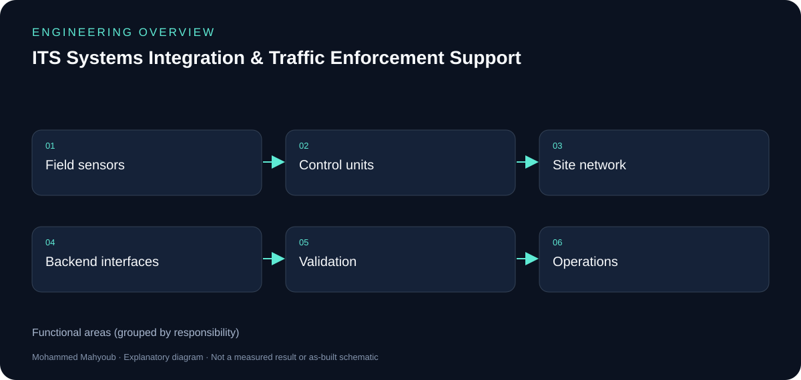
ITS Systems Integration & Traffic Enforcement Support
0 source figures · illustrated case study
Engineering documentation
Architecture, workflow, implementation detail and source galleries for every portfolio project.

0 source figures · illustrated case study
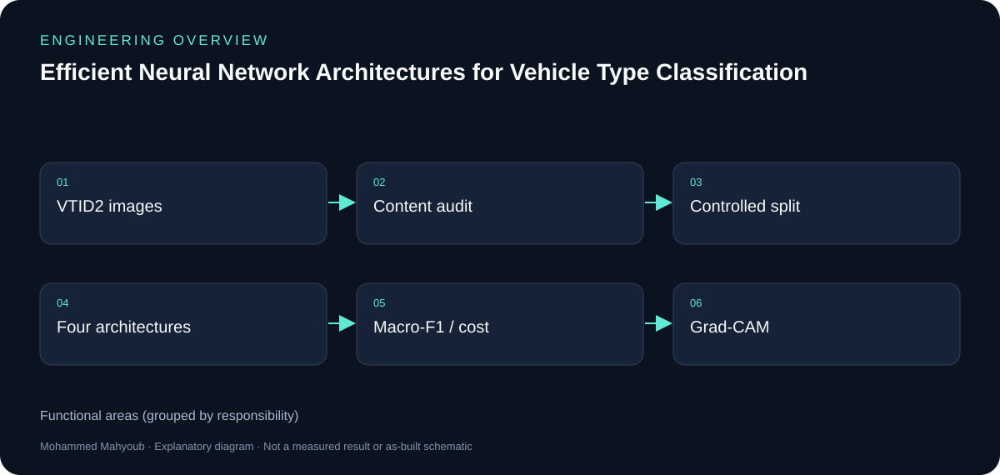
0 source figures · illustrated case study
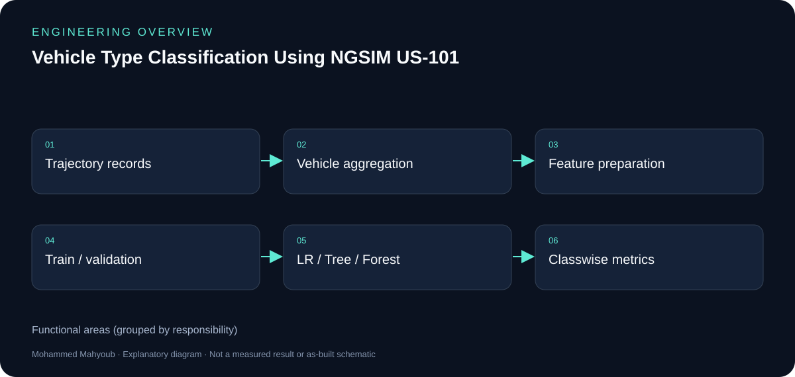
14 source figures · illustrated case study
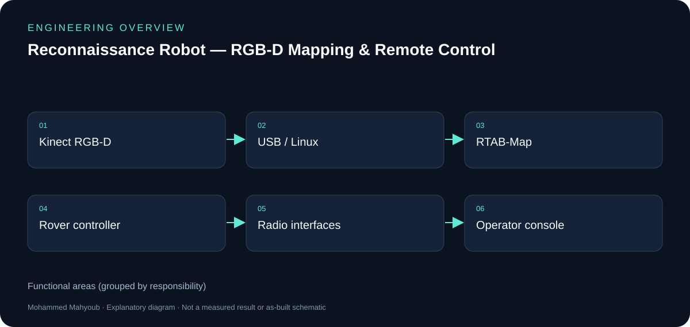
0 source figures · illustrated case study
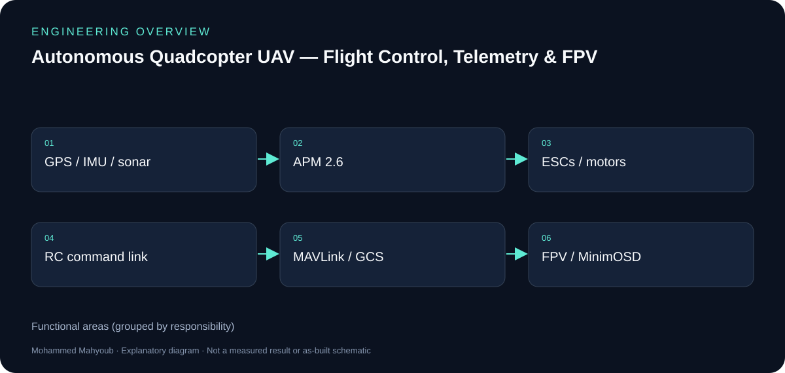
20 source figures · illustrated case study
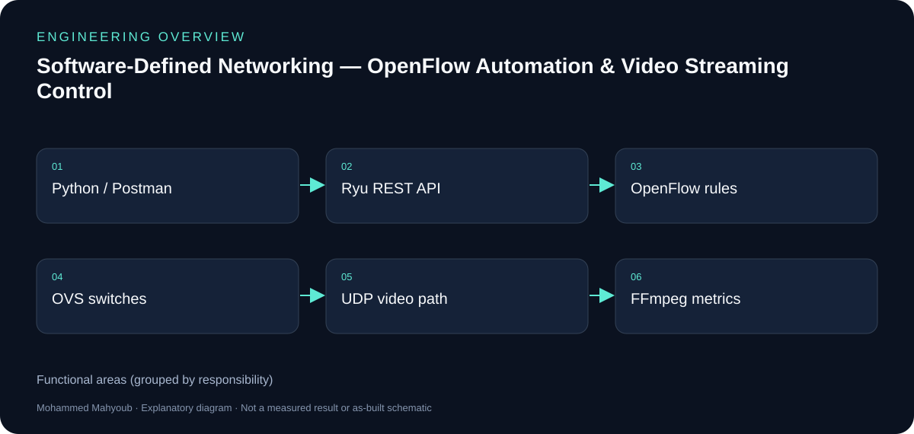
6 source figures · illustrated case study
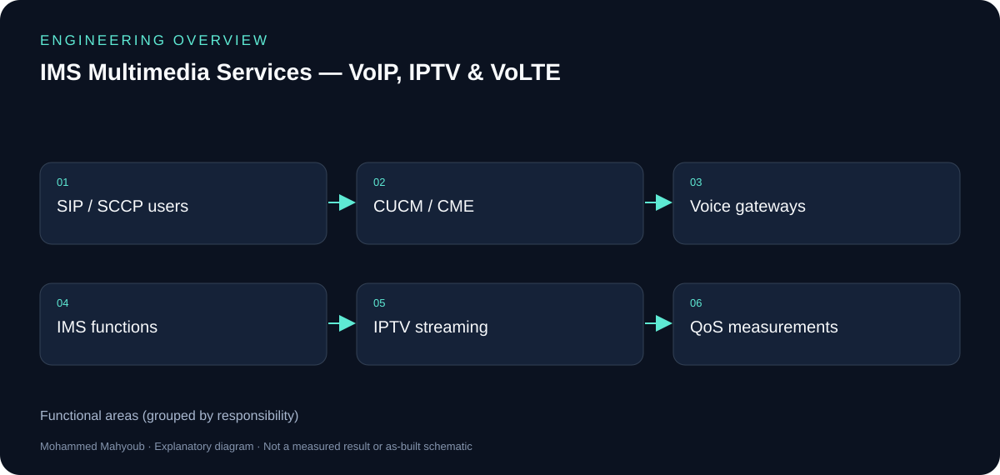
25 source figures · illustrated case study
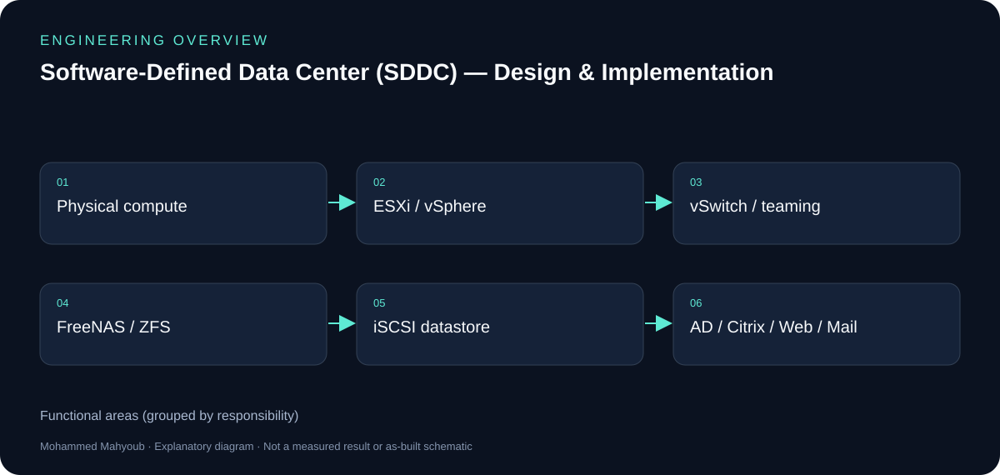
23 source figures · illustrated case study
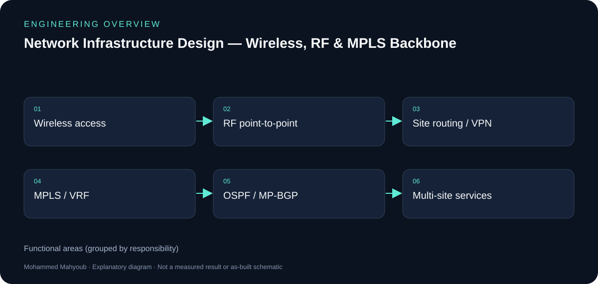
2 source figures · illustrated case study
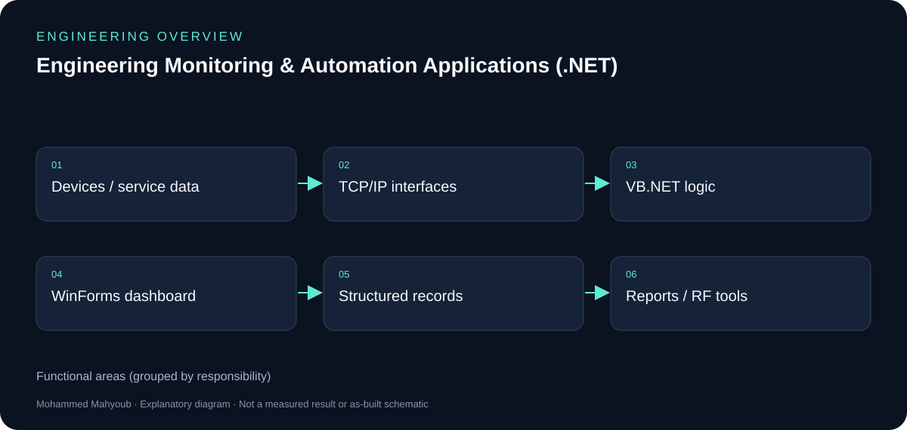
3 source figures · illustrated case study
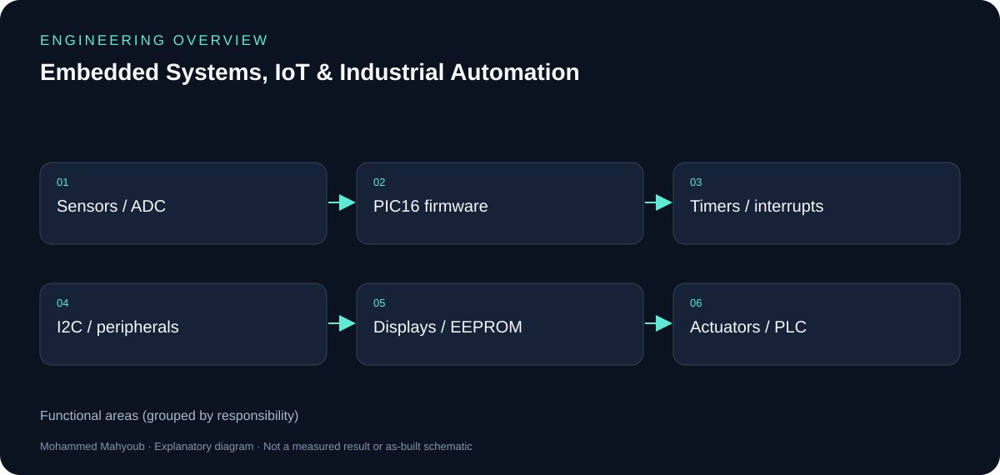
1 source figures · illustrated case study

16 source figures · illustrated case study
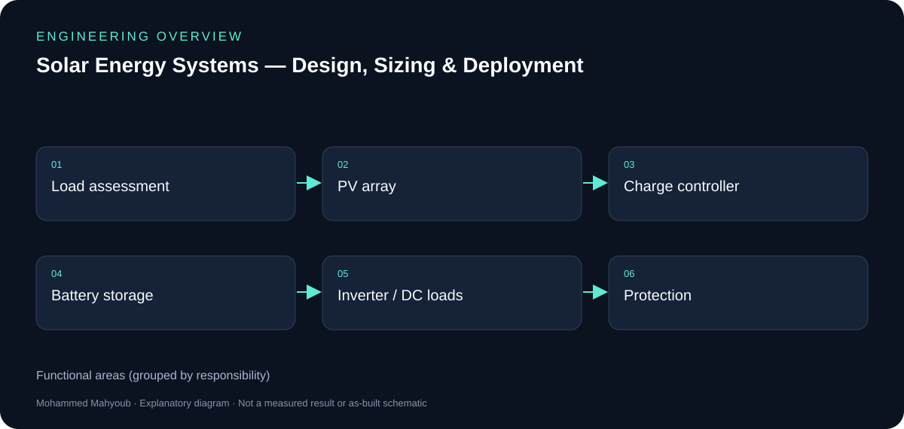
0 source figures · illustrated case study